RAKARRACK is a multi-effect processor for guitar players but the signal processing engine allows a full range of parameter adjustment making it suitable for almost any audio processing task. Nineteen effects are included in this version: Lineal EQ, Compressor, Distortion, Overdrive, Derelict, Echo, Chorus, Phaser, Analogic Phaser, Flanger, Reverb, Parametric EQ, WahWah, Alienwah, Cabinet, AutoPan/Extra Stereo, Harmonizer, Musical Delay, Noise Gate, New Dist and Analog Phaser. Ten can be used simultaneously on a chain. Also has a Tuner and a monophonic MIDI Converter. Rakarrack can be managed externally by MIDI, the program receive Program Change and the parameters can be controlled via Control Change MIDI messages.
One of the most important things of RAKARRACK is that everything is on a single mouse click. All the effect parameters are on the screen.
The effects are processed on a chain, the chain order processing is fully configurable by the user for each preset. The preset saves all the effects parameters. These presets can be grouped into banks to manage more efficiently. Saving a preset is as easy as typing a name
Rakarrack is capable of generating high volume output. It has Gain controls in general and some of the effects allow high gain adjustments. Use these gains with caution because they can produce unwanted effects. However, a limiter is applied to the final output which prevents signal level from increasing beyond 0dB. Bear this in mind, for high gains triggering limiting in the output will initiate high-ratio hard-knee compression. This is better than hard clipping distortion, but the audio effect can be undesirable.
Rakarrack is a JACK application, Dave Phillips wrote some good articles in their blog of how to use linux audio with jack, if you don't know about jack, or you have problems running rakarrack, please read this series of articles:
Troubleshooting Linux Audio, Part 1
Troubleshooting Linux Audio, Part 2
Troubleshooting Linux Audio, Part 3a
Troubleshooting Linux Audio, Part 3b
|
Short Format |
Long Format |
|
|---|---|---|
|
-h |
--help |
Shows the command line options and exits. |
|
-n |
--no-gui |
Start the application without GUI |
|
-l file |
--load=file |
Load file single Preset |
|
-b file |
--bank=file |
Load a file Bank |
rakarrack -l mypreset.rkr Starts Rakarrack and load the preset file mypreset.rkr
rakarrack -n -b mybank.rkrb Starts Rakarrack without GUI and load the bank file mybank.rkrb
The connections shown in the screenshot correspond to a motherboard sound card. The guitar is connected to the input line. Obviously this configuration can vary depending of your sound card. RAKARRACK has two inputs to allow use of stereo devices. The screenshot shows the connection of a guitar, usually mono aural.
The state of the rack can be saved to a file at any time, either pressing the "Save" buttons or via the menu File->Save Preset. Rakarrack suggest the preset name for the filename.rkr in the save operation, but you can put what you want. You can assign the preset name here:

If the user modifies any preset bank, The "compare" button allows you to compare the sound of the current state of rakarrack with the original bank preset from which it departed.
You can use banks to store groups of presets. 80 preset can be saved on a bank. To include a preset in a bank must first indicate the name of preset on the main screen, open the bank window and click on a empty slot with the right mouse button. To retrieve a preset stored in a bank must open the window of banks and clicking the left button on the preset desired, also you can use the Preset selector of the main window.
To save a preset in a bank:
Put descriptive name to the preset
Open the bank window (B)
Press the right mouse button in a empty place OR
Press the right mouse button on an existing preset if you wish to overwrite it.
To retrieve a preset from a bank:
Open the bank window (B)
Click the left mouse button on the preset
When rakarrack starts always load the bank selected in preferences unless you specify another bank in the command line. Of course you can load/save any bank via menu File. By default, is allocated in preferences the installation included bank. This bank ("Default.rkrb") is installed with root properties, then you can't overwrite as user. But is easy to save in any place to work with it. The bank contains default presets developed by the development team and some friends who have contributed in this facet.

Up the Bank windows screenshot, the tittle bar show the loaded bank. Click on preset or use preset counter in the Preset section to change the preset.
Presets marked with (*) use the Select mode in the Harmonizer effect, that means you need to play a monophonic melody in the Key/Chord selected. The harmonizer recognizes what note you play and creates a second voice in the Key/Chord selected.

Through the Settings window you can configure different aspects of the application. The colors of he four elements on the screen, background, buttons, labels and leds.


Also you can select the following schemes of widget decoration, X11, fltk, gtk+ y plastic. Some small example of fltk and plastic.


You can also select a PNG background image clicking on the 'Browse' button and adjust the font sizes.
Audio
Fx On at start
This option put the FX On at the start, by default is Off.
Preserve Gain/Master
The Input Gain and Master Volume are stored in the preset, activating this option the Input Level and Master Volume was not modified when preset changes
Upsampling
Enable upsampling using libsamplerate process the effects with higher samplerate then the sound quality is imporved, all the resample parameters will take effect the next time you launch rakarrack. Enabling upsampling rakarrack will use a lot more CPU resources of your computer, then take care to adjust all the upsampling settings, you can hang your computer if your main processor can not handle the resampling parameters. Each level of libsamplerate quality use more nd more resources, and of course each effect use more CPU resources because need to process a higher amount of data. I higly recommend start with Linear quality and amount "x2" and check your CPU usage with "top", and then increase the amount/quality as desired.
#
Amount of resampling (x2, x3, x4, x5, x6)
Up.Q.
Upsampling quality, select the libsamplerate quality for the upsampling procedure.
Down Q.
Downsampling quality, select the libsamplerate quality for the downsampling procedure.
Harmonizer Quality
Selects the quality of the harmonizer audio engine, the available values are "4,8,16", the default value is "4". Incrementing the quality increments the CPU usage by this effect. This parameter will take effect the next time you run rakarrack.
MIDI
Here you can select if you want to auto connect the
rakarrack MIDI IN to another device when the program starts, and you
can select the device, also when the program is running you can
connect here o use other utilities to do that.
The MIDI Implementation radio buttons selects how
rakarrack interpret the incoming MIDI Control mesages, by default we
use our MIDI implementation table, but you can also use MIDI learn to
create your own tables.
Jack
Here you can select if you want to auto connect the Jack output ports, you can select the ports available, the number of selected ports needs to be an odd number.
Misc
Here you can define a nickname that was recorded in the presets that are created. The development team intends to create banks of effects created by users. These presets should assume the same license with which this program is released (GPL version 2 or higher) and suggest carrying an identification in the form First Name Last Name (nick). Of course you have to give a descriptive name to your preset. If you have a good preset and want to share or want to be included in future versions, send it to this address holborn@users.sourceforge.net
Bank
Here you can specify what file bank is loaded when program starts.
We created a few shortcuts to make it easier to manage the program.
| Key | Function |
|---|---|
| R | Enable rakarrack |
| T | Enable Tuner |
| M | Enable MIDI Converter |
| L | Open the load preset window |
| S | Open the save preset window |
| B | Open the bank window |
| E | Open the MIDI Learn Window |
| I | Open the Settings window |
| O | Open the Order window |
| N | New preset |
| P | Compare |
| F1 | Open the Help window |
The effects are enabled pressing the keys (1,2,3,4,5,6,7,8,9,0) . These keys are unrelated to the effects but with his position. So the key 1 trigger the effect that in the first position (the first effect of the left in the first line) and so on until 0 (the latter effect to the right in the second line).
This is the MIDI Learn window, that brings the posibility to create
a MIDI implementation table for each preset in the bank. You can see
two browsers, one at the left with all the available effect
parameters,
and another at the right with all the presets in the Bank.
The most important thing here is the input box located below the
parameter browser, here you can select the number of the MIDI Control
Message, you can edit by hand, or selecting and draging, or capturing
an incoming MIDI message clicking on the Get MIDI Message button. When
you have the desired control number you need to assign to the effect
parameters, clicking on the button assing, this message will be engaged
to the selected effect parameter on the browser.
You can "Assign" up to 20 effects parameter for a single
control number message, also you can use different control
messages to manage only one effect parameter.
The grid boxes in the middle display the engaged MIDI
control messages to the selected effect parameter on the browser, the
Assignement for a single effect parameter can be cleared with the
button "Clear Assignements", also you can clear all the assignements
for this preset with the button Clear Preset".
In the left part of the window you have the list of presets in the
working bank, you can copy from or to the selected preset, that copy
all the preset table of a single preset.
The midi learn implementatition tables is saved on the preset file
for a single preset, and in a separate file in the case of the Banks,
the program read this bank preset file when read the normal bank file.
The chain has nineteen effects, you can select any of the available effects: Linear EQ, Compressor, Distortion, Overdrive, Derelict, Echo, Chorus, Phaser, Analog Phaser, Flanger, Reverb, EQ parametric, WahWah, Alienwah, Cabient, Pan, Harmonizer, MusicDelay and NoiseGate. Ten can be used simultaneously. It cascading process, following the order that appears on the screen, from left to right and top to bottom. The order is configurable by the user via the button "Put in your order Rack" giving access to this screen. The effect selected moves up or down using the arrows. The double arrow button interchange the selected effects between the two browsers.
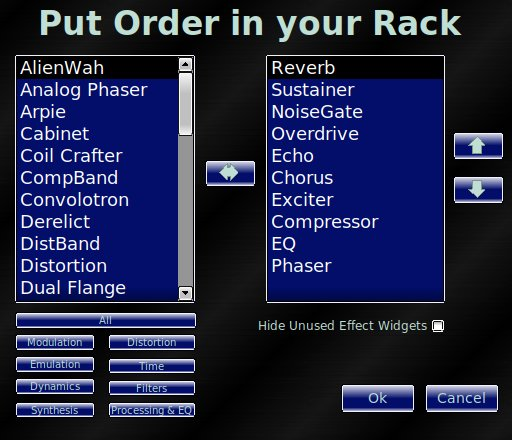
The effects have two common elements. The "On" button and "Preset" input choice. These individual effect presets are not modified by the user and in most cases are those that Octavian Paul Nasca defined for the purposes of ZynAddSubFX. The value of preset individual is not stored in presets general and can not relate to the parameters in effect.
All the parameters managed with a slider widget can be adjusted fine with the mouse wheel or the Up/Down - Left/Right arrows in the keyboard decrease/increase value by "1", Shift+(Left/Right Arrow) decrease/increase value by "10" also you can navigate and adjust trough the parameters with you computer keyboard with the Tab, Up/Down arrow and space bar keys.
For control the parameter values via MIDI see
the MIDI Implementation Chart
for the complete list of MIDI message commands recognized, to easy
controlrakarrack with MIDI messages use the MIDI Learn way.
|
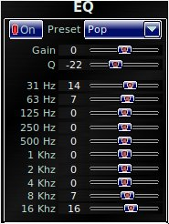 |
Adapted from the ZynAddSubFX Equalizer. Gain: Overall output level Q: Resonance of individual filters. Generally helps smooth extreme settings...or make extreme settings yet more extreme. |
|
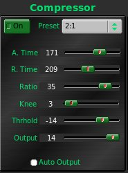 |
Originally adapted from ArtsCompressor. DSP routine has been rewritten entirely as the code had been adapted at a stage in ArtsCompressor development prior to many bug fixes that occurred later in its evolution – which unfortunately removed calculation of a soft-knee compression characteristic. This is mentioned to give hope to those who were aware of the bugs in compressor in Rakarrack 0.3.0. These bugs have been fixed, and this compressor has been traced using test signals to confirm it does what we think it does. A. Time : Attack Time. Time in milliseconds for attack to settle to 64% of final amount of compression. R. Time: Release Time. Time in milliseconds for gain to return to 64% of it's initial setting. Note: For the curious, the strange number, 64%, relates to the RC time constant (RC means Resistor-Capacitor), which follows a natural exponential curve. The use of this behavior will make this compressor feel more natural to one who is most familiar with rack-mounted analog compressors. Ratio: For every Ratio (dB) that the input exceeds the Threshold, the output will be allowed to increase by 1 dB. For example, using compression ratio of 2, if the signal gets 2dB above the threshold, the output will only go 1dB above the threshold. Knee: Percentage of the region in dB of space between Threshold and 0dB (basically is Knee X -Threshold). Within this region, the ratio increases from 1 to log2(ratio). Threshold + Knee marks the point of full compression onset. For example, if knee is set to 100%, a very gradual compression characteristic will be obtained, but the maximum compression available is log2(ratio). A ratio of 32 will result in a real ratio ranging from 1 to 5. This is useful for processing cymbals as it does not crunch the dynamic attack quite so badly, but helps sustain the trailing resonance. Thrhold: Threshold. Defines the onset of compression. Output: How much gain to remove from the final stage of the compressor. Auto Output: Automatically calculate makeup gain. If this is unchecked, then adjustments of Ratio, Knee, and Thrhold will make changes to the overall output level. Unchecking may be useful to interpret Thrhold as a limiting threshold, and one would likely use a high ratio in this case. |
|
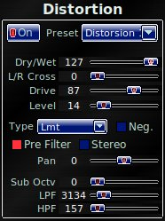 |
Adapted from the ZynAddSubFX 'Distorsion' This is a waveshaper, and not particularly an amp or stompbox modeling effect. This must be used judiciously with EQ's as well as the LPF and HPF settings (Low Pass Filter, High Pass Filter). Tip: Your classic green stompbox has a Pre Filter curve with cutoff at 720Hz. This corresponds to approximately 51 on the HPF setting. If trying to emulate stompbox or amp sounds, it is highly advisable to use the Pre Filter option with HPF higher than 30 and LPF lower than 70. As you increase drive, decrease LPF. Rakarrack attempts to be friendly to computers limited in both RAM and CPU. Because of this, the waveshaper does not use oversampling to reduce the effects of digital aliasing. Without going deep into DSP theory, this means that hard clipping with a lot of drive will create harmonics that are greater than half the sampling rate. These harmonics get mirrored back into the audio range. If they are significant in magnitude, then there will be a "grainy" non-musical sound. This is what most guitarists are talking about when making reference to "digital distortion". Functions like Sine, Pow and Atan generate a lot of harmonics, and even at lower signal levels. Lmt, Clip and Zigzag are among the worst, but these are generally used for nasty noisey sounds, so a little digital aliasing may not be a bad thing. Fortunately, for instruments such as guitars, you can significantly limit the bandwidth of the input signal without catastrophically discoloring the timbre of the instrument by applying Low Pass Pre-filtering. By reducing the high frequency content of the input, you can greatly minimize the level of aliasing harmonics present in the output. The main point is that great sounding distortions can be obtained from Rakarrack, but the distortion module is not meant to emulate your favorite stompbox, but to off the flexibility create these sounds as well as unique flavors of distortion. The Crunch waveshaping type is the most physically informed of the waveshaping functions currently used. The clipping characteristic is most closely related to curve produced by a JFET amplifier stage. With proper EQ settings, a sound reminiscent of high gain British stacks can be obtained. Sub Octv: Allows you to mix some sub-octave rumble into the output. Technically speaking, this modulates the output with a square wave at half the fundamental frequency (sub octave). |
|
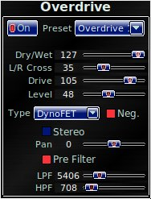 |
Adapted from the ZynAddSubFX Distorsion Same as Distortion, but without sub-octave. |
|
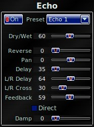 |
Adapted from the ZynAddSubFX Echo Wet/Dry: Mix level of echo with original. Reverse: Mixes reverse delay with forward delay. More about reverse: Echo works by storing audio samples in memory and playing back samples that were stored a while ago. At a sample rate of 48kHz, the number of samples stored in memory for a 1 second delay is 48,000. To play back audio from 1 second ago, there is a reader that increments through, right in front of the write. The reader reads a sample from a second ago, and the writer writes that memory location with a new sample from the present. Now, what if we could read this block of memory backwards? Then everything stored in memory comes out in reverse, and has an interesting reverse envelop sound. In the digital word, we can read it forward as easily as backwards, so why not keep track of both and let you mix them together? Pan: Sends the delay more to the right or left. Zero balances it in the middle. Delay: Amount of time before you hear the echo. Lrdl. : Left/Right delay difference. A setting of 64 means that the delay time is the same for left and right channels. If larger than 64, the right channel is delayed longer than the left channel. Less than 64 the reverse is true. This allows you to achieve the stereo 'Ping Pong' effect. L/R Cr : Left/Right Crossing. This mixes left and right channels. Fb : Feedback. How much of the delayed output to add to the input. This makes the echo regenerate, like it's bouncing around in a canyon. Damp: Low pass filter on the delayed signal. This rolls off the high frequencies on every regeneration. Setting to a higher level will make the echo sound more natural. |
|
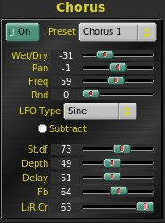 |
Adapted from the ZynAddSubFX Chorus Tips Freq: LFO Rate Rnd: Add noise to LFO to make it more natural sounding. St.df : Stereo difference of LFO. L/R Cr. : Mix left into right, Right into left. At maximum level, left and right channels are swapped. |
|
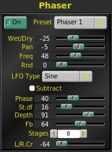 |
Adapted from the ZynAddSubFX Phaser More mild digital phaser with exponential LFO sweep. Phase: This is the offset for the "center" of the sweep. Depth: LFO deviation or some may like to think of it as LFO amplitude. This is the same type of function that has been labeled 'width' in Analog Phaser. Fb: Feedback. Some phasers title this "Regen". Feedback is negative as this moves toward zero, positive from 64+. 64, strangely, corresponds to zero feedback. |
|
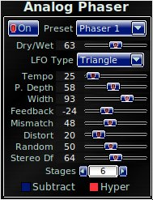 |
ZynAddSubFX Phaser Seriously Hacked Overhauled DSP engine in Zyn phaser and used shell to create a "Physically Informed Digital Model of an Analog FET Phaser". Don't forget to spit after chewing that mouthful. When should you want to use Phaser instead? A) Next to the pitch shifter, Analog Phaser is one of the most CPU intensive FX in Rakarrack. If you find your computer can't handle it, then Phaser is much more friendly to slow processors. B) You just plain like the original Phaser Effect and want to use it. C) When you want to use two phasers at the same time, you can chain Analog Phaser and Phaser together for some unique filtering sounds. A Phaser works by adding a delay to a certain group of frequencies and shifting the filter that selects the group of frequencies up and down the spectrum. When mixed with the original input, some of the delayed parts of the signal cancel with the the original (destructive interference). The technical term for this is 'notch filter'. For every two phase stages, a new notch appears in the spectrum, so for 4 stages and up we have a 'comb filter' because a plot of the frequency response begins to look like something you use to brush your hair as the number of phase stages increases. If you don't care about what's under the hood, skip this paragraph -- To get the basic behavior of an Analog Phaser, the transfer function of a real analog phaser all-pass filter stage was computed and transformed into a discrete-time equivalent transfer function, then broken down into the resulting numerical computation algorithm. These all-pass filter stages were chained together in sequence of the overall analog circuit. Five or six different schematics were referenced in the design of this model to see what different units do to achieve a certain sound. The resulting 'Virtual Circuit' is an original creation. Finally, some of the non-perfect physical components and distortion were modeled in a simplistic way to add a certain warmth to the effect without sinking your CPU into an ice age. Wet/Dry: At zero, both the phase shifted signal and input signal are mixed equally. This creates the deepest notch filter. Why would you want to mix all Wet? Modulating the all-pass filter stages can create frequency shifting at faster modulation rates. This produces a chorus-like effect, and you may want the frequency bending without the notch filtering. Think UniVibe. LFO Type: More or less self explanatory. The Barber Pole setting will disappoint you if you're looking for a true barber pole phaser. This is simply an arrangement of multiple ramps modulating the phaser, so you hear the thump every time the ramp starts over. It's a pleasant enough effect at really slow rates, and creates something interesting at very high rates. In between it's annoying :) . Freq. : LFO frequency. Depth: How deep the phaser can sweep. It's an LFO offset. 64 is dead center. If you want it to stay in the high range, set this higher than 64. If you want the phaser to spend more time carving out the lower frequency range, set this to some thing less than 64. Width: This is how far the LFO travels. It's the LFO amplitude. Fb : Feedback. Usually named 'Regen' on a phaser stompbox. For deeper notches keep Fb negative for even number stages and positive for odd number stages. Mismatch: FET Phasers suffer from the manufacturing process of JFET transistors. These things generally vary over a very wide range of properties per batch. What does this mean to a Phaser? It means that the frequency where 45 degrees phase shift occurs varies from stage to stage. This mismatch makes the notches wider, but less deep. This parameter best aligns with reality at a setting of 5 to 10. Large settings may be used to obtain a better 'Vibe sound. Distort: FETs used as variable resistors are only linear over a certain range. This nonlinearity adds harmonics to the processed signal and somewhat warps the frequency response. This is a very subtle effect, but worthwhile to be able to zero it if you don't want it modeled. St. Diff : Stereo Difference. Delay the LFO in the right or left channel. This combined with the panner effect can make it sound like something is twirling in an elliptical orbit around your head. Stages: First order all-pass filter networks to be chained together. Set to one for a high pass filter (or low pass filter with subtract checked). 4 stages is very typical in the average stompbox. Bi-mode and Tri-mode phasers include switchable 6 and 8 stage filters. It's rare to see an analog phaser with more than 8 stages in stompbox form because parts get expensive, and noise becomes an expensive design problem to mitigate. In the digital world, adding more stages is just another time through the filter loop if you can spare the CPU time. Subtract: Subtract wet from dry instead of add. Hyper: Flattens out the lower end of the LFO. Used with a Tri wave, this emulates the "Hyper Sine" found in some analog phaser pedals. It was a clever way that analog filter designers contrived to make the LFO behave according to the human's perception of frequency. To our ears, musical pitch increases exponentially with frequency.
|
|
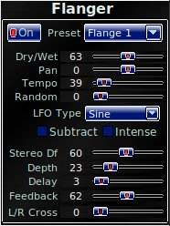 |
Adapted from the ZynAddSubFX Chorus |
|
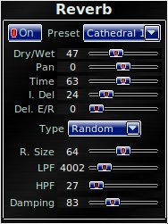 |
Adapted from the ZynAddSubFX Reverb |
|
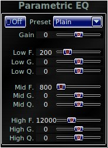 |
Adapted from the ZynAddSubFX Equalizer |
|
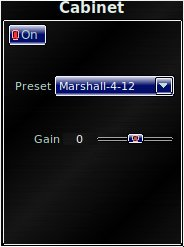 |
Effect using the ZynAddSubFx Equalizer engine This applies an approximation of certain speakers, cabinets, speaker/cabinet combinations according to publicly available frequency plots. For those wanting convolution-based cabinet modeling...hold on for future releases. |
|
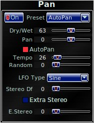 |
For the stompbox minded people, this is a stereo tremolo effect. Extra Stereo setting creates a more spacious stereo imaging effect. |
|
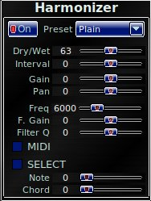 |
Intelligent Harmonizer ExplainedRakarrack harmonizer effect use the audio engine of the smbPtichShifter.cpp located at http://www.dspdimension.com. In order to save CPU use only a mono pitch-shifter in the lowest quality available, you can change this on the program Settings window, but only for a low quality values because high quality ones use too much CPU. The audio signal converted to mono is send it to the pitch-shifter and returned to the two pole Peak filter, panned and send it to both channels L/R. The rakarrack Harmonizer has 3 modes: Normal ModeIs how a normal pitchshifter run, the pitch ratio is fixed and can be selected in the Interval effect parameter of the effect. Select ModeIn this mode the pitch ratio is variable, this value depends of the selected Interval parameter, and the Note and Chord effect parameters. Rakarrack then recognize the audio note played (Only "melodies" monophonic data can be played in this mode) and modifies the pitch ratio in order to do a musical harmonization with the Tonality/Chord selected in the parameters, of course the twelve tonality's are available and 33 chords: ,6,Maj7,lyd,Maj(9),Maj7(9),6/9,+,m,m6,m7,m7(b5),m9,m7(9),m7(11) MIDI ModeThis mode run in the same way as Select Mode but the Tonality/Chord is recognized via MIDI notes, the MIDI chord recognizer recognizes all the above chords plus all the inversions and bass changed chords, also has memory, they use the chord just another chord is send it and recognized. The MIDI channel can be selected in the Settings window, then the Harmonizer adjust the pitch ratio with the audio note recognized, played by the user, and the Tonality/Chord received via MIDI. (Sequencer track ... )
|
|
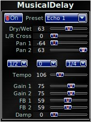 |
Musical Delay ExplainedThe musical delay effect is a dual line delay, the word "musical" is due that you can adjust the delay time in both lines in a musical terms, with Tempo effect parameter, and the Delay1, Delay2, Delay3 effect parameters. The Delay lines are measured in fractions of quarter notes at the Tempo selected. That means 1/2 is an Eighth note and 1/4 is a Sixteenth note. (1,1/2,1/3,1/4,1/5,1/6) are the possible values, that include eighth triplets, etc. The center delay parameter, is the delay between the two delay lines, and is the only one can be set equal to zero. The Tempo effect parameter value range is big (10~480) that's for admit half or double song Tempo in order to obtain largest or shortest delays. Off course you have Gain, Pan and Feedback parameters for each delay line in order to adjust the desired effect.
|
|
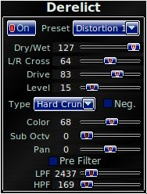 |
Distortion using resonant filter engine and standard Distortion waveshaping functions. Controls are mostly like Distortion module, but includes "Color" to add resonance to the waveshaper signal. This allows for a "bigger" sound that is useful for fuzzes and so on. Your imagination will take it where you want. Addition of this module also allows the user to have up to 3 simultaneous distortion modules, 2 of with can have sub-octave modulation. |
|
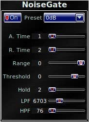 |
New Effect based on Gate, Steve Harris LADSPA plugin. Only use the noise gate when you really need it. This can be a life saver, but it can also be a source of great frustration if improperly configured. |
|
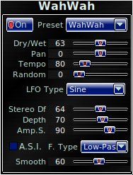 |
Adapted from the ZynAddSubFX DynamicFilter By now you're saying, "Ok, I get the Pan, Freq, Rnd, St. Dif, and Depth thing, but what the..." In addition to use as Auto-wah (LFO-modulated Wah-Wah), this is also an envelope filter. Currently, here are the three parameters related to envelope control: Amp S.: Amplitude sensitivity. This is like the sweep range. If sensitivity is set low, you have to pluck really hard to make the filter move. If set high, then the filter will sweep to the limit. Amp. S.I.: This stands for "Amplitude Sensitivity Inverse", but is applied in a somewhat interesting way. This slider offsets the base frequency for the wah wah filter resonance. At the same time, it acts as a logical check for which direction to sweep. When this is set less than 64, the filter responds to plucking by sweeping upward in frequency. When this is set higher than 64, then the filter responds to plucking by sweeping downward in frequency. Tip: If you want to control wah-wah with a MIDI foot pedal, this is the parameter you will want to map. For pure pedal-controlled wah-wah, set Amp. S and Depth to zero. Smooth: How much to smooth the signal envelope. At a low level, the sound is like a bubble maker. At a high level, the filter responds very slowly to signal attack. |
|
|
Adapted from the ZynAddSubFX Alienwah A cross between a Flanger, Phaser and a Wah-Wah... |
|
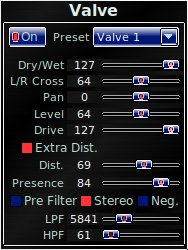 |
New Effect based on Valve, Steve Harris LADSPA
plugin, filters, harmonic enhancer and some extra distortion where
added. |
|
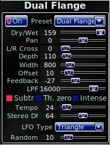 |
Another Flanger alternative.
|
|
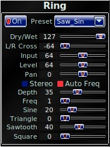 |
New
Effect based on Ring, Steve Harris LADSPA
plugin. Auto Freq recognizes the frequncy of the note played (Only
monophonic sorry ..) in order that you can use Ring as a simple
monophonic synthesizer. |
|
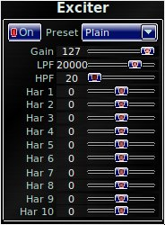 |
New Effect based on Harmonic, Steve Harris
LADSPA
plugin. |
|
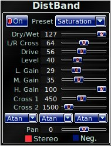 |
Multi Band Distortion, use the Cross1 and
Cross2 to select the ranges of each band.
You can select a waveshape type for each band. |
|
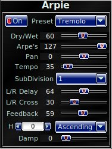 |
"Arpie"
is a pet name for Arpeggiator. This effect is a modified version
of Echo. The delay line is played back at higher rates to create
arpeggios at octave intervals. You can select a preset sequence,
then adjust the number of steps to repeat from the sequence to gain a
wide variety of patterns. Arpie can be adjusted to achieve thick and
beautiful soundscapes as well as very edgy electronic trance and techno
sounds. Of course, with slower tempos such that several
phrases are repeated one can get the tempo-doubling side effect to lay
out paint-pealing leads without hardly moving your fingers.
|
|
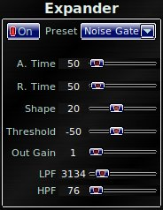 |
The
primary purpose for this effect is to offer a differently natured Noise
Gate than the "Noise Gate" module. The turn-on characteristic is
modeled after that of a BJT transistor, thus it behaves more similarly
to an analog noise gate. It is likely that Expander uses less CPU
resources than Noise Gate, but neither are very resource intensive
modules.
|
|
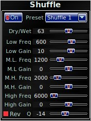 |
Effect based on Stereo Shuffling
paper by Michael Gerzon. That convert L/R signals to M/S, Mid and
Side. You can equalize one of this bands with a parametric four band,
the Rev selector select the M/S band to equalize, ON = S, OFF = M. That
produce interesting spatial sound, also can be used to remove certain
frequencys on the M/S channels. |
|
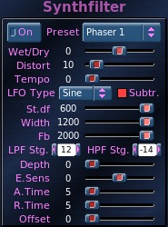 |
A different type of view of
the Analog Phaser effect revealed a basic structure supporting
high-order filters with adjustable number of filter stages ...most of
the
work was already done, so thanks again to Paul Nasca for this piece of
code from the original ZynAddSubFX Phaser. |
|
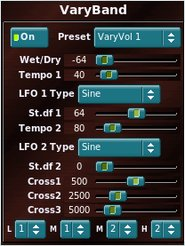 |
Four
Bands volume modulated with two LFOs. You can select for each LFO the
type, Tempo(speed) and LR difference (St.df). Cross points are to
defining the band frequency range. 20-> Cross1 = Low The Combi choice select the LFO for each band,
1 = LFO1 |
|
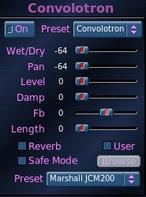 |
Convolotron A module optimized for physical speaker/cabinet modeling. A lame EE joke: "If you do that once, I will convolve your face with a Dirac Delta. If you do it again, I will convolve your head with an impulse train." Some jargon associated with this effect: IR Impulse Response. Filters are often classified according to their impulse response. An impulse response is the output of the filter (or physical system) resulting from application of a short-duration, one-time, "impulse" of energy. An audio signal can be constructed mathematically as a series of such impulses separated by an infinitesimal period of time, and scaled by a certain factor representing the real-time amplitude of the signal. If one impulse is applied to a filter, the filter begins to react with its characteristic impulse response. Then if another impulse is applied a little later, the same impulse response is invoked and is added to the first. If we think of the audio signal as a rapid succession of impulses, then the result of adding up all the impulse responses will reconstruct what the physical system will do in response to the input signal. This process is called convolution. Convolution. A process of successively adding the impulse responses for any signal that has been or will be applied to the system. In the case of realtime audio processing the impulse responses are causal in nature, so we can ignore the future and apply the effects only for what has already occured. Convolotron. A
rakarrack module that takes an audio file as an IR, and convolves it
with the input signal. This signal may be an IR recorded from an
amplifier, a microphone, a cheap computer speaker system, horns,
bells, gongs, reverb...kicking a door... Some caveats: Convolotron is very CPU hungry. Rakarrack
does straight-forward time-domain convolution. Another Linux
software application to compare is JConv, which is not as CPU hungry because there are
some frequency domain math tricks which allow the user to sacrifice
some quality to reduce processing load. It is also
optimized for reverbs. As a result, Rakarrack requires some
"horsepower", but is better suited to amplifier/cabinet modeling
assuming your CPU can handle it. Most reverb (unless entire significant part of IR is less than 100ms)
is impossible in realtime, unless you have a server farm doing
guitar FX for you. Rakarrack has a 'reverb' switch to apply
some preprocessing to the IR to reduce it down to something which
can be applied in real time. JConv applies some delay as well as some
frequency response/FFT tricks, whereas the Rakarrack Reverb switch uses
a discrete reflection approach to reverb. This means the IR file
is treated as a record of all the reflections in a room. Some
simple processing is applied to break the room into large
"squares". Instead of hearing a real room, where
reflections from all parts continuously along the wall come to your
ear, Rakarrack gives you a room where the wall is broken into a grid of
square shapes. You hear only one reflection from each square on
the wall, and this reflection represents the average power reflected
from the composite surface area of that square. This method more or less captures the
reverb characteristic as described by the IR file, but sacrifices some
of the "cohesiveness" just to make it possible for the present
day consumer CPU in real time. You can also use this mode to shorten
amp/speaker/cabinet responses although the end result may not be
anything like you may expect. Parameters Wet/Dry: Self explanatory. For amp responses, most of the time you will want this all wet. |
|
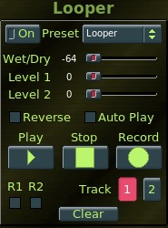 |
Looper |
|
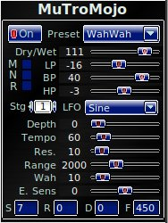 |
MutroMojo |
This is a experimental monophonic MIDI converter. The parameters are not stored on presets but are saved as preferences and is remembered each time you start the program.
The most important thing for a better results is tune your guitar. You need to connect with qjackctl or whatever Alsa-Seq connect utility the rakarrack MC OUT port to a synthesizer or sequencer device in order to produce sound or record something.
The Triggerparameter controls the volume passed to the note recognition algorithm.
The Velocity is for adjust the MIDI velocity sensitivity message send.
The Channel is the channel selected for the MIDI message, of course.
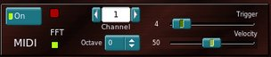

When "Your frequency" is outside the acceptable range is shown in red.
Rakarrack Team
Other people that has collaborate
Presets
GFX
Thanks to:
Paul Nasca Ocatavian, ZynAddSubFx author.
Mario Lang, Tuneit author
Matthias Kretzer & Stefan Westerfeld, ArtsCompressor Authors
Steve Harris, LADSPA swh-plugins
| Program Change | ( x ) | 0~60 81 Previous Preset 82 Next Preset |
|
| Control Change | Volume 0x07 (x) | 7 | 1~127 |
| Modulation 0x01 (x) | 1 | 1~127 (WahWah Depth) | |
| Undefined 0x02 (x) | 2 | 1~127 (Derelict Dist Drive) | |
| |
Undefined 0x03 (x) | 3 | 1~127 (Derelict Dist Level) |
| |
Undefined 0x04 (x) | 4 | 1~127 (Derelict Dist LPF) |
| |
Undefined 0x05 (x) | 5 | 1~127 (Derelict Dist HPF) |
| |
Undefined 0x06 (x) | 6 | 1~127 (Derelict Dist Color) |
| |
Undefined 0x08 (x) | 8 | 1~127 (Derelict Sub Octave) |
| |
Undefined 0x09 (x) | 9 | 1~127 (Distortion Sub Octave) |
| |
Undefined 0x0C(x) | 12 | 1~127 (FX/%) Balance |
| |
Undefined 0x0E(x) | 14 | 1~127 (Input Gain) |
| |
Undefined 0x14 (x) | 20 | 1~127 (Alienwah Depth) |
| |
Undefined 0x15 (x) | 21 | 1~127 (Phaser Depth) |
| |
Undefined 0x16 (x) | 22 | 1~127 (Flanger Depth) |
| |
Undefined 0x17 (x) | 23 | 1~127 (Chorus Depth) |
| |
Undefined 0x18 (x) | 24 | 1~127 (Musical Delay Gain 1) |
| |
Undefined 0x19 (x) | 25 | 1~127 (Musical Delay Gain 2) |
| |
Undefined 0x1A (x) | 26 | 1~127 (Harmonizer Freq) |
| |
Undefined 0x1B (x) | 27 | 1~127 (Harmonizer Interval) |
| |
Undefined 0x1C (x) | 28 | 1~127 (Wah Wah Wet/Dry) |
| |
Undefined 0x1D (x) | 29 | 1~127 (Overdrive Wet/Dry) |
| |
Undefined 0x1E (x) | 30 | 1~127 (Distortion Wet/Dry) |
| |
Undefined 0x1F (x) | 31 | 1~127 (Harmonizer Wet/Dry) |
| |
Undefined 0x2E (x) | 46 | 1~127 (Echo Pan) |
| |
Undefined 0x2F (x) | 47 | 1~127 (Overdrive Pan) |
| |
Undefined 0x30 (x) | 48 | 1~127 (Distortion Pan) |
| |
Undefined 0x31 (x) | 49 | 1~127 (Harmonizer Pan) |
| |
Undefined 0x32 (x) | 50 | 1~127 (Chorus Pan) |
| |
Undefined 0x33 (x) | 51 | 1~127 (Flanger Pan) |
| |
Undefined 0x34 (x) | 52 | 1~127 (Chorus Wet/Dry) |
| |
Undefined 0x35 (x) | 53 | 1~127 (Flanger Wet/Dry) |
| |
Undefined 0x36 (x) | 54 | 1~127 (Phaser Wet/Dry) |
| |
Undefined 0x37 (x) | 55 | 1~127 (Alienwah Wet/Dry) |
| |
Undefined 0x38 (x) | 56 | 1~127 (Musical Delay Wet/Dry) |
| |
Undefined 0x39 (x) | 57 | 1~127 (Reverb Wet/Dry) |
| |
Undefined 0x3A (x) | 58 | 1~127 (AutoPan/Extra Stereo Wet/Dry) |
| |
Undefined 0x3B (x) | 59 | 1~127 (Echo Wet/Dry) |
| |
Undefined 0x3C (x) | 60 | 1~127 (Phaser Pan) |
| |
Undefined 0x3D (x) | 61 | 1~127 (Alienwah Pan) |
| |
Undefined 0x3E (x) | 62 | 1~127 (Musical Delay Pan 1) |
| |
Undefined 0x3F (x) | 63 | 1~127 (Reverb Pan) |
| |
Undefined 0x41 (x) | 65 | 1~127 (Musical Delay Pan 2) |
| |
Undefined 0x42 (x) | 66 | 1~127 (WahWah Pan) |
| |
Undefined 0x43 (x) | 67 | 1~127 (AutoPan/Extra Stereo Pan) |
| |
Undefined 0x44 (x) | 68 | 1~127 (Overdrive Drive) |
| |
Undefined 0x45 (x) | 69 | 1~127 (Distortion Drive) |
| |
Undefined 0x46 (x) | 70 | 1~127 (Overdrive Level) |
| |
Undefined 0x47 (x) | 71 | 1~127 (Distortion Level) |
| |
Undefined 0x48 (x) | 72 | 1~127 (Chorus Freq.) |
| |
Undefined 0x49 (x) | 73 | 1~127 (Flanger Freq.) |
| |
Undefined 0x4A (x) | 74 | 1~127 (Phaser Freq.) |
| |
Undefined 0x4B (x) | 75 | 1~127 (WahWah Freq.) |
| |
Undefined 0x4C (x) | 76 | 1~127 (Alienwah Freq.) |
| |
Undefined 0x4D (x) | 77 | 1~127 (AutoPan/Extra Stereo Freq.) |
| |
Undefined 0x4E (x) | 78 | 1~127 (Echo Fb) |
| |
Undefined 0x4F (x) | 79 | 1~127 (Chorus Fb) |
| |
Undefined 0x50 (x) | 80 | 1~127 (Flanger Fb) |
| |
Undefined 0x51 (x) | 81 | 1~127 (Phaser Fb) |
| |
Undefined 0x52 (x) | 82 | 1~127 (Alienwah Fb) |
| |
Undefined 0x53 (x) | 83 | 1~127 (Musical Delay Fb 1) |
| |
Undefined 0x54 (x) | 84 | 1~127 (Musical Delay Fb 2) |
| |
Undefined 0x55 (x) | 85 | 1~127 (Overdrive LPF) |
| |
Undefined 0x56 (x) | 86 | 1~127 (Distortion LPF) |
| |
Undefined 0x57 (x) | 87 | 1~127 (Reverb LPF) |
| |
Undefined 0x58 (x) | 88 | 1~127 (Overdrive LPF) |
| |
Undefined 0x59 (x) | 89 | 1~127 (Distortion HPF) |
| |
Undefined 0x5A (x) | 90 | 1~127 (Reverb HPF) |
| |
Undefined 0x5B (x) | 91 | 1~127 (Chorus LR_Cr) |
| |
Undefined 0x5C (x) | 92 | 1~127 (Flanger LR_Cr) |
| |
Undefined 0x5D (x) | 93 | 1~127 (Phaser LR_Cr) |
| |
Undefined 0x5E (x) | 94 | 1~127 (Overdrive LR_Cr) |
| |
Undefined 0x5F (x) | 95 | 1~127 (Distortion LR_Cr) |
| |
Undefined 0x60 (x) | 96 | 1~127 (Alienwah LR_Cr) |
| |
Undefined 0x61 (x) | 97 | 1~127 (Echo LR_Cr) |
| |
Undefined 0x62 (x) | 98 | 1~127 (Musical Delay LR_Cr) |
| |
Undefined 0x63 (x) | 99 | 1~127 (Chorus St_df) |
| |
Undefined 0x64 (x) | 100 | 1~127 (Flanger St_df) |
| |
Undefined 0x65 (x) | 101 | 1~127 (Phaser St_df) |
| |
Undefined 0x66 (x) | 102 | 1~127 (WahWah St_df.) |
| |
Undefined 0x67 (x) | 103 | 1~127 (Alienwah St_df.) |
| |
Undefined 0x68 (x) | 104 | 1~127 (AutoPan/Extra Stereo St_df.) |
| |
Undefined 0x69 (x) | 105 | 1~127 (Chorus Rnd) |
| |
Undefined 0x6A (x) | 106 | 1~127 (Flanger Rnd) |
| |
Undefined 0x6B (x) | 107 | 1~127 (Phaser Rnd) |
| |
Undefined 0x6C (x) | 108 | 1~127 (WahWah Rnd.) |
| |
Undefined 0x6D (x) | 109 | 1~127 (Alienwah Rnd.) |
| |
Undefined 0x6E (x) | 110 | 1~127 (AutoPan/Extra Stereo Rnd) |
| |
Undefined 0x6F (x) | 111 | 1~127 (WahWah Amp S.) |
| |
Undefined 0x70 (x) | 112 | 1~127 (WahWah Amp S.I.) |
| |
Undefined 0x71 (x) | 113 | 1~127 (WahWah Smooth) |
| |
Undefined 0x72 (x) | 114 | 1~127 (Phaser Phase) |
| |
Undefined 0x73 (x) | 115 | 1~127 (Alienwah Phase) |
| |
Undefined 0x74 (x) | 116 | 0 = Efx 1 Off 1 = Efx 1 On 2 = Efx 2 Off 3 = Efx 2 On 4 = Efx 3 Off 5 = Efx 3 On 6 = Efx 4 Off 7 = Efx 4 On 8 = Efx 5 Off 9 = Efx 5 On 10 = Efx 6 Off 11 = Efx 6 On 12 = Efx 7 Off 13 = Efx 7 On 14 = Efx 8 Off 15 = Efx 8 On 16 = Efx 9 Off 17 = Efx 9 On 18 = Efx 10 Off 19 = Efx 10 On 20 = EQ On/Off 21 = Compressor On/Off 22 = Distortion On/Off 23 = Overdrive On/Off 24 = Echo On/Off 25 = Chorus On/Off 26 = Phaser On/Off 27 = Flanger On/Off 28 = Reverb On/Off 29 = Parametric EQ On/Off 30 = WahWah On/Off 31 = AlienWah On/Off 32 = Cabinet On/Off 33 = Pan On/Off 34 = Harmonizer On/Off 35 = MusicalDelay On/Off 36 = NoiseGate On/Off 37 = Derelict On/Off 38 = Analog Phaser On/Off 39 = Valve On/Off 40 = Dual Flange On/Off 41 = Ring On/Off 42 = Exciter On/Off 43 = DistBand On/Off 44 = Arpie On/Off 45 = Expander On/Off 46 = Shuffle On/Off 47 = Synthfilter On/Off 48 = VaryBand On/Off 49 = Convolotron On/Off 50 = Looper On/Off 51 = MuTroMojo On/Off |
| |
Undefined 0x75 (x) | 117 | 1~127 (Analog Phaser Wet-Dry) |
| |
Undefined 0x76 (x) | 118 | 1~127 (Analog Phaser Distortion) |
| |
Undefined 0x77 (x) | 119 | 1~127 (Analog Phaser Freq) |
| |
Undefined 0x78 (x) | 120 | 1~127 (Analog Phaser Depth) |
| |
Undefined 0x79 (x) | 121 | 1~127 (Analog Phaser Width) |
| |
Undefined 0x7A (x) | 122 | 1~127 (Analog Phaser Feedback) |
| |
Undefined 0x7B (x) | 123 | 1~127 (Analog Phaser Mismatch) |
| |
Undefined 0x7C (x) | 124 | 1~127 (Analog Phaser St.df) |
| |
Undefined 0x7D (x) | 125 | 1~127 (Derelict Wet-Dry) |
| |
Undefined 0x7E (x) | 126 | 1~127 (Derelict Dist Pan) |
| |
Undefined 0x7F (x) | 127 | 1~127 (Derelict Dist LR Cross) |